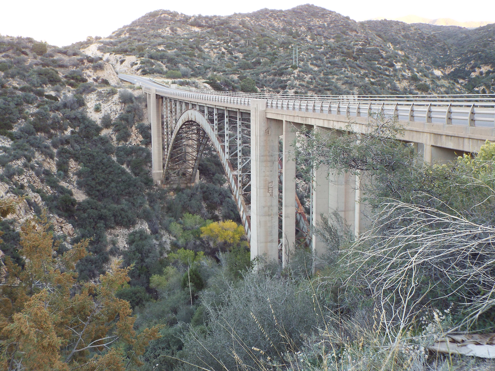

A Survey of Section 4(f)
Welcome to our website, where we will explore Section 4(f). We will learn about Section 4(f) from its inception to the current day, and explore a few different types of Section 4(f) projects.
- What is Section 4(f)?
- History and Development
- What qualifies as a Section 4(f) Property?
- Section 4(f) Case Studies
- Sources (NOT YET UPDATED)
What is Section 4(f)?
Section 4(f) is a part of the U.S. Department of Transportation Act of 1966. It requires that parks, recreational lands, wildlife and waterfowl refuges, and historic sites be considered and protected during the development of transportation projects. The Federal Highway Administration (FHWA) oversees the implementation of this legislation. Before approving a project that affects Section 4(f) property, the FHWA must determine that there is no feasible alternative and that the project includes all possible planning to minimize harm. Section 4(f) properties include publicly owned parks and recreation areas, wildlife and waterfowl refuges, and historic sites.
What does it mean to use a Section 4(f) goal?
Section 4f pertains to properties that are permanently taken for a transportation project, properties negatively impacted by temporary use, or properties that are impacted by construction elsewhere (noise, visual impacts). The goal of this legislation is to avoid harm to important cultural and natural places whenever possible, and minimize damage if avoidance isn't possible.
Who works on Section 4(f) projects?
Many different groups are involved in Section 4(f) projects. At the beginning, engineering teams propose project ideas and collaborate with state Departments of Transportation and local governments to plan the project and coordinate necessary reviews. They also work with construction companies and other partners for implementation and potential sponsorship.
As the project develops, these groups engage with Native American tribes and local communities, making sure to begin consultation early in the process to address cultural and environmental concerns.
Finally, federal agencies such as the Federal Highway Administration (FHWA) and the U.S. Department of Transportation oversee the project, ensuring that it complies with Section 4(f) requirements and that impacts to protected resources are avoided or minimized.
Video: Dive Deeper
This short video by the Federal Highway Administration (FHWA) is a great introduction to Section 4(f):
Who is Involved?
Agencies: Local and Federal- State Departments of Transportation
- Local governments
- FHWA
- DOT
CRM contributes to Section 4(f) projects by conducting surveys and studies in historical sites and archeological resources in areas to determine whether the property qualifies for Section 4(f) consideration during construction projects.
Construction, Engineering, and Design Firms
Tribal Historical Preservation Officer
Communities Affected by the Project
State Historical Preservation Officer
History and Development
Section 4(f) was developed in 1966 as a part of the U.S. Department of Transportation. Originally, this legislation prohibited the use of Section 4(f) properties unless there was no feasible or sensible alternative, and that the project incorporated all types of planning to minimize harm. In 2005, the Safe, Accountable, Flexible, Efficient Transportation Act provided an amendment which approved the use of resources where the impact is de minimis, streamlining the approval process for transportation projects. In 2008, the Federal Highway Administration and Federal Transit Administration updated definitions for “feasible and prudent” construction and created clear guidelines about choosing alternatives and least overall harm.Amendments and Timeline
What Qualifies as a Section 4(f) Property?
Section 4(f) properties all have two vital characteristics in common. 1) They are affected by transportation development projects, and 2) they are places the public has access to.
Examples include:
- Historic properties
- Public parks
- Airports
- Wildlife and waterfowl refuges
- Recreation areas
Conversely, not all public parks are subject to Section 4(f). The property must be significant, every park/site is not considered a Section 4(f) property. Each of these properties must be officially designated for its purpose, and its function must match this designation.
Section 4(f) Case Studies
Pinto Creek Bridge (Gila County, Arizona)

Location: Section 8 of Township 1 South, Range 14 East
Latitude, Longitude: (33.638889, -110.999167)
Project Summary:The Pinto Creek Bridge Replacement Project in Gila County, Arizona was involved improvements to a previous historic bridge and US 60 highway. This project would impact an early 20th century campsite with scattered artifacts. It would also impact historic US Route 60 alignment and the original Pinto Creek Bridge which are both considered historically significant. Because his transportation project affected historic transportation infrastructure and other archeological sites, Section 4(f) review was required. Mitigation measures such as prior archeological examination and methods of least possible harm were recommended.
Stakeholders: Arizona Department of Transportation Environmental Planning, Federal Highway Administration (FHWA), Southeast District Engineer, Arizona residents, Ak-Chin Indian Community (Ak-Chin), the Fort McDowell Yavapai Nation (FMYN), the Gila River Indian Community (GRIC), the Hopi Tribe, the Pueblo of Zuni, the Salt River Pima-Maricopa Indian Community (SRP-MIC), the San Carlos Apache Tribe, the Tohono O'odham Nation (TON), the Tonto Apache Tribe (TAT), the White Mountain Apache Tribe (WMAT), the Yavapai-Apache Nation (YAN), and the Yavapai-Prescott Indian Tribe
Friday’s Station - NRI #86003259 (Tahoe, Nevada)
Location: Township 13 North Range 18 East Section 26 and 27
Latitude, Longitude: (38.965667, -119.935819)
Project Summary:Friday’s Station (NRI #86003259) as affected by US 50/South Shore Community Revitalization Project. The Tahoe Transportation District (TTD), Tahoe Regional Planning Agency (TRPA), and Federal Highway Administration partnered to hire Ascent Environments, who completed a proposed de minimis determination regarding the US 50/South Shore Community Revitalization Project. A de minimis is one of several possible actions necessary to satisfy Section 4(f) requirements. The project goal is to make significant updates to transportation infrastructure in and connected to Lake Tahoe. There are many Section 4(f) properties identified in the findings, including several historic properties. The property we will focus on for our project is Friday’s Station, a NRHP registered property of significance for its 1860’s Greek Revival-style architecture, and for its use as an inn and Pony Express station during US westward expansion.
Stakeholders: NSP, Conservancy, TTD, FHWA-CA, FHWA-NV, Caltrans, Private Property Owners
Bloomfield Subdivision Historic District (Kalamazoo County, Michigan)
Location: Township 3S, Range 11W, Sections 2, 11, 12, 13
Latitude, Longitude: (42.249292, -85.555666)
Project Summary:Bloomfield Subdivision Historic District (found eligible but not yet registered) as affected by Kalamazoo County/Kalamazoo Battle Creek International Airport Runway 17-35 Extension Project. The Federal Aviation Administration (FAA) identified that Kalamazoo County/Kalamazoo Battle Creek International Airport (AZO) requires a significant expansion of runway 17-35 to keep up with operational and safety demands of the airport. A Section 4(f) evaluation was conducted by Mead & Hunt and reviewed by the US Department of the Interior. The evaluation found that Bloomfield Subdivision Historic District, a NRHP eligible post-WW2 community, would be adversely affected.
Stakeholders: Bay Mills Indian Community of Michigan; Grand Traverse Band of Ottawa and Chippewa Indians of Michigan; Hannahville Indian Community of Michigan; Huron Potawatomi, Inc; Keweenaw Bay Indian Community of Michigan; Lac Vieux Desert Band of Lake Superior Chippewa of Michigan; Little River Band of Ottawa Indians; Little Traverse Bay Bands of Odawa Indians; Match-E-Be-Nash-She-Wish Band of Pottawatomi Indians; Pokagon Band of Potawatomi Indians of Michigan; Saginaw Chippewa Indian Tribe of Michigan; Sault-Ste. Marie Tribe of Chippewa Indians of Michigan; Burt Lake Band of Ottawa and Chippewa Indians; Grand River Band of Ottawa Indians; USDA – APHIS Wildlife Services; EGLE, Water Resources Division, Transportation Review Unit; U.S. Army Corps of Engineers, Detroit District, Regulatory & Permits; Federal Emergency Management Agency, Region 5; USDA, Natural Resource Conservation Service, Portage Service Center; US Fish and Wildlife - Michigan Field Office; EPA Region 5 , NEPA Implementation Section; Michigan Department of Natural Resources, Executive Division; Michigan State Historic Preservation Office, State Housing Development Authority; Pavilion Township; Charter Township of Comstock; Kalamazoo Charter Township; Kalamazoo County, Planning & Development Department; City of Portage, Department of Community Development, Planning; City of Kalamazoo, Community Planning and Development
!!! UNDER CONSTRUCTION !!!
Sources
Please not that Sources and Image Sources have not been updated and are not accurate.
Citations
1https://www.loc.gov/item/94500412/
Image Sources
Image 1: Pinto Creek Bridge. c1884. photographed and published by Palmquist & Jurgens, St. Paul, Minn. Obtained on 2/17/22 from https://www.loc.gov/item/94500412/
Image 2: Friday's Station. 1900. Photographed by Gill, De Lancey. Obtained on 2/17/22 from https://www.loc.gov/item/2002719520/.
Image 2: Kalamazoo Airport. 1900. Photographed by Gill, De Lancey. Obtained on 2/17/22 from https://www.loc.gov/item/2002719520/.